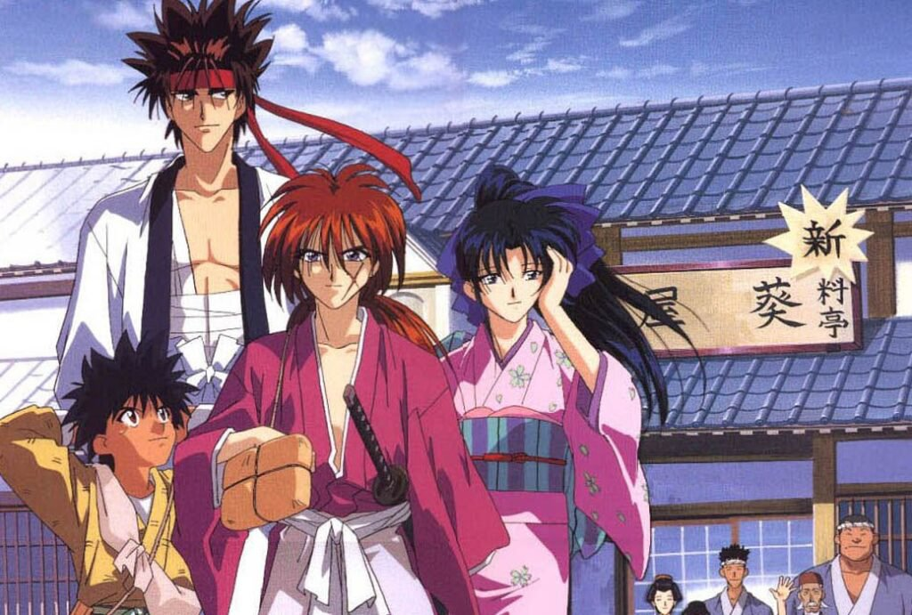

Rurouni Kenshin
Rurouni Kenshin tells the story of a wanderer named Kenshin, who used to be called Hitokiri Battousai during the Japanese civil war. His tale is about redemption of his past and all his murders by helping those in trouble with his reverse-blade sword, the sakabato.
Visit FandomGo back